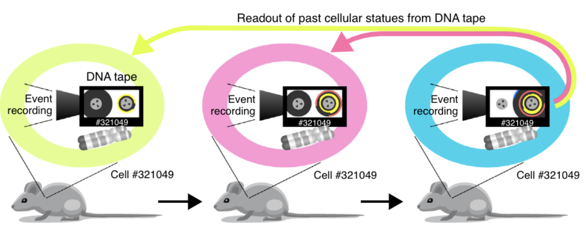
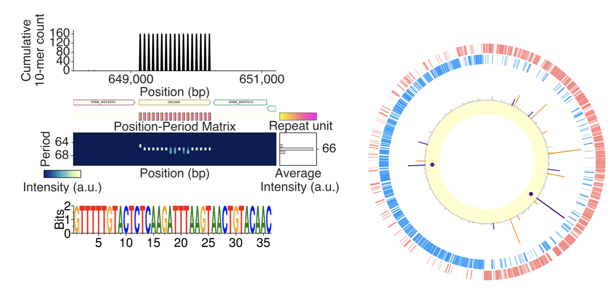
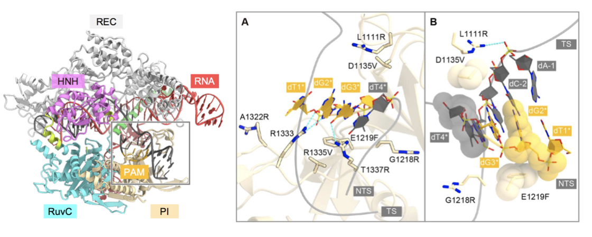
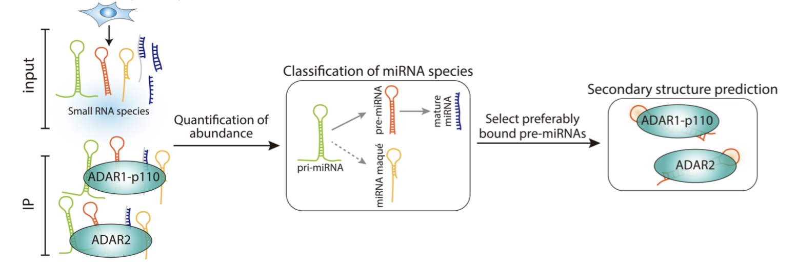
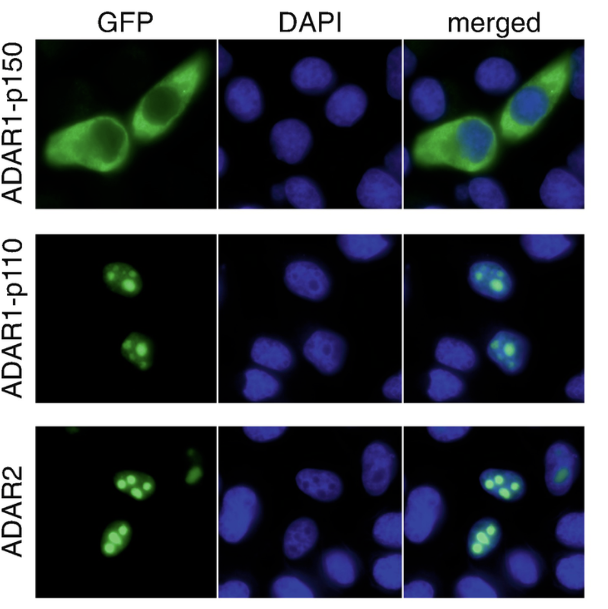
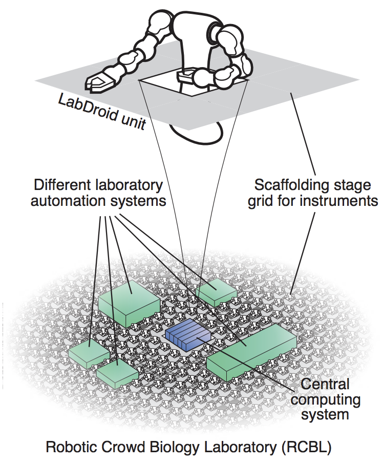

Rina C Sakata, Soh Ishiguro, Hideto Mori, Mamoru Tanaka, Motoaki Seki, Nanami Masuyama, Keiji Nishida, Hiroshi Nishimasu, Akihiko Kondo, Osamu Nureki, Masaru Tomita, Hiroyuki Aburatani, Nozomu Yachie. A single CRISPR base editor to induce simultaneous C-to-T and A-to-G mutations
Peer-reviewed papers
Soh Ishiguro, Hideto Mori, and Nozomu Yachie. DNA event recorders send past information of cells to the time of observation. (2019) Current Opinion in Chemical Biology, Vol. 52, pp54-62. PDF

Daniel Evans-Yamamoto, Nao Takeuchi, Takahiro Masuda, Yumi Murai, Yasuhide Onuma, Hideto Mori, Nanami Masuyama, Soh Ishiguro, Nozomu Yachie, and Kazuharu Arakawa. Complete genome sequence of Psychrobacter sp. strain KH172YL61 isolated from deep-sea sediments in the Nankai Trough, Japan. (2019) Microbiology Resource Announcements, Accepted.
Hideto Mori, Daniel Evans-Yamamoto, Soh Ishiguro, Masaru Tomita, and Nozomu Yachie. Fast and global detection of periodic sequence repeats in large genomic resources. (2018) Nucleic Acids Research, gky890, SPADE (software and example data)

Hiroshi Nishimasu, Xi Shi, Soh Ishiguro, Linyi Gao, Seiichi Hirano, Sanae Okazaki, Taichi Noda, Omar O. Abudayyeh, Jonathan S. Gootenberg, Hideto Mori, Seiya Oura, Benjamin Holmes, Mamoru Tanaka, Motoaki Seki, Hisato Hirano, Hiroyuki Aburatani, Ryuichiro Ishitani, Masahito Ikawa, Nozomu Yachie, Feng Zhang, and Osamu Nureki. Engineered CRISPR-Cas9 nuclease with expanded targeting space. (2018) Scienceaas9129, Supplementary Materials, and Press release (In Japanese).

Soh Ishiguro¶, Josephine Galipon¶, Rintaro Ishii¶, Yutaka Suzuki, Shinji Kondo, Mariko Okada-Hatakeyama, Masaru Tomita, and Kumiko Ui-Tei. Base-pairing probability in the microRNA stem region affects the binding and editing specificity of human A-to-I editing enzymes ADAR1-p110 and ADAR2. (2018) RNA Biology.¶Equally contributed. PDF, and Supplementary Materials.

Josephine Galipon¶, Rintaro Ishi¶, Soh Ishiguro, Yutaka Suzuki, Shinji Kondo, Mariko Okada-Hatakeyama, Masaru Tomita, and Kumiko Ui-Tei. High-quality overlapping paired-end reads for the detection of A-to-I editing on small RNA. (2018) Methods in Molecular Biology.¶Equally contributed. Pubmed

Yachie N, Robotic Biology Consortium¶ & Natsume T. Robotic crowd biology with Maholo LabDroids. (2017) Nature Biotechnology.Pubmed
¶ Members of the Robotic Biology Consortium:
Steering Group: Yachie N, Takahashi K, Katayama T, Sakurada T, Kanda GN, Takagi E, Hirose T, Katsura T, Moriya T, Kitano H, Tsujii J & Natsume T
Robotics Group: Shiraki T, Kariyazaki H, Kamei M, Abe N, Fukuda T, Sawada Y, Hashiguchi Y, Matsukuma K, Murai S, Sasaki N, Ipposhi T, Urabe H, Kudo T, Umeno M, Ono S, Miyauchi K, Nakamura M, Kizaki T, Suyama T, Hatta T & Natsume T
Information Technology Group: Ohta T, Takahashi K, Ozawa Y, Yachie N, Sakurada T, Matsukuma K, Murai S, Ihara S, Tamaki S, Antezana E, Garcia-Castro A, Perret J-L, Ishiguro S, Mori H, Evans-Yamamoto D, Masuyama N, Tomita M, Tsujii J, Katayama T & Kitano H
Proteomics Group: Hatta T, Matsumoto M, Nakayama H, Shirasawa A, Shimbo K, Yamada N, Nakayama KI & Natsume T
High-Content Cell Screening Group: Shimizu T & Saya H
Epigenetics Group: Yamashita S, Matsushima T & Asahara H
Clinical Group: Eguchi H, Mikamori M & Mori M.

Review papers
森秀人, 石黒宗. "ウェットなデータストレージメディアとしてのDNA", 実験医学 2019年1月号, 羊土社. ISSN 02885514 (2019). link
谷内江望, 石黒宗. "全ゲノム合成時代における長鎖DNA合成の考え方", スマートセルインダストリー -微生物細胞を用いた物質生産の展望-, シーエムシー出版. ISSN 978-4-7813-1334-4. (2018). link
石黒宗, 増山七海, 谷内江望. "オミクス科学における実験数の組合せ爆発に挑むDNAバーコード技術", 生化学, 日本生化学会. ISSN 0037-1017 (2017). PDF
石黒宗, 森秀人, 谷内江望. "DNAバーコードによる生命科学実験の限界突破", 実験医学増刷 はじめての数理モデルとシミュレーション, ISBN 978-4-7581-0361-9, 羊土社 (2017). link
ガリポン・ジョゼフィーヌ, 石黒宗, 冨田勝, 程久美子. "RNA-SeqによるA-to-I RNA編集の検出", 実験医学 RNA-Seq実験ハンドブック, 113-118, ISBN 978-4-7581-0194-3, 羊土社 (2016). link
Posters
Soh Ishiguro, Kana Ishida, Hideto Mori, Mamoru Takana, Nanami Masuyama, Motoaki Seki, Keiji Nishida, Akihiko Kondo, Satoru Kuhara, Masaru Tomita, Hiroyuki Aburatani, and Nozomu Yachie. A CRISPR–barcode technology to isolate a target clone from different cell population samples. Keystone Symposia, Genome Engineering: From Mechanisms to Therapies, Victoria, BC, Canada, 02/20/2019.
Soh Ishiguro, Kana Ishida, Hideto Mori, Mamoru Takana, Nanami Masuyama, Motoaki Seki, Keiji Nishida, Akihiko Kondo, Satoru Kuhara, Masaru Tomita, Hiroyuki Aburatani, and Nozomu Yachie. A CRISPR–barcode technology to isolate a target clone from different cell population samples. Asia Synthetic Biology Association Meeting 2018, Jeju, Korea, 11/23/2018.
Soh Ishiguro, Kana Ishida, Hideto Mori, Motoaki Seki, Nanami Masuyama, Rina Sakata, Mamoru Tanaka, Keiji Nishida, Akihiko Kondo, Masaru Tomita, Nozomu Yachie. Retrospective isolation of evolved clones from an initial cell population. Keio Life Science Symposium, 09/13/2018.
Soh Ishiguro, Ayaka Matsuo, Masaru Tomita, Hiroyuki Aburatani, Nozomu Yachie. (2017) CRISPR/Cas9-based DNA barcode genetics to dissect clonal dynamics of heterogeneous cell populations, From Genetic Networks to a Cellular Wiring Diagram, 04/26/2017.
Soh Ishiguro, Josephine Galipon, Rintaro Ishii, Yutaka Suzuki, Shinji Kondo, Mariko Okada-Hatakeyama, Masaru Tomita, Kumiko Ui-Tei. (2015) "Genome-wide identification of A-to-I editing in human miRNA by ADAR isoform-specific RIP-sequencing", MBSJ2015, Kobe, Japan.
Soh Ishiguro, Kazuharu Arakawa, Masaru Tomita. (2013) "Benchmarking test for the detection methods of RNA editing sites based on RNA-seq data", MBSJ2013, Kobe.
Soh Ishiguro, (2019). A CRISPR–barcode technology to isolate a target clone from different cell population samples, 4th Annual Meeting of The Japanese Society for Genome Editing, Tokyo, Japan, 06/04/2019.
Soh Ishiguro, (2019). A CRISPR–barcode technology to isolate a target clone from different cell population samples, LSBM retreat 2019, Hakone, Japan, 04/02/2019.
Soh Ishiguro, Nozomu Yachie. (2015). Impact of defects in 'protein ladders' supporting intracellular pathways, Joint Workshop on Synthetic and Systems Biology, Yamagata.